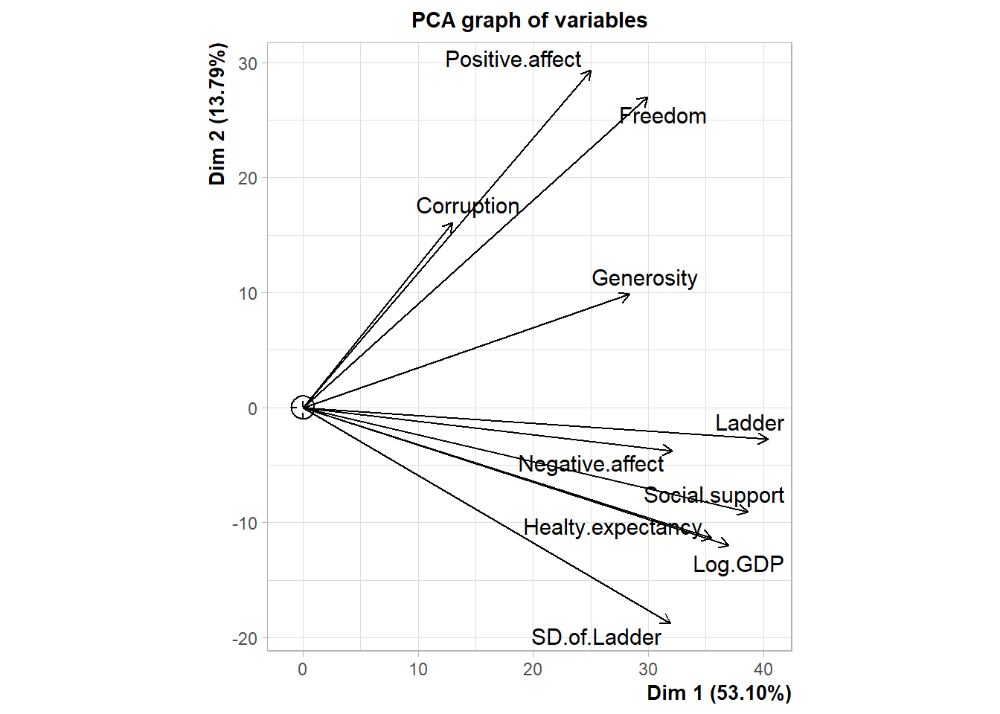
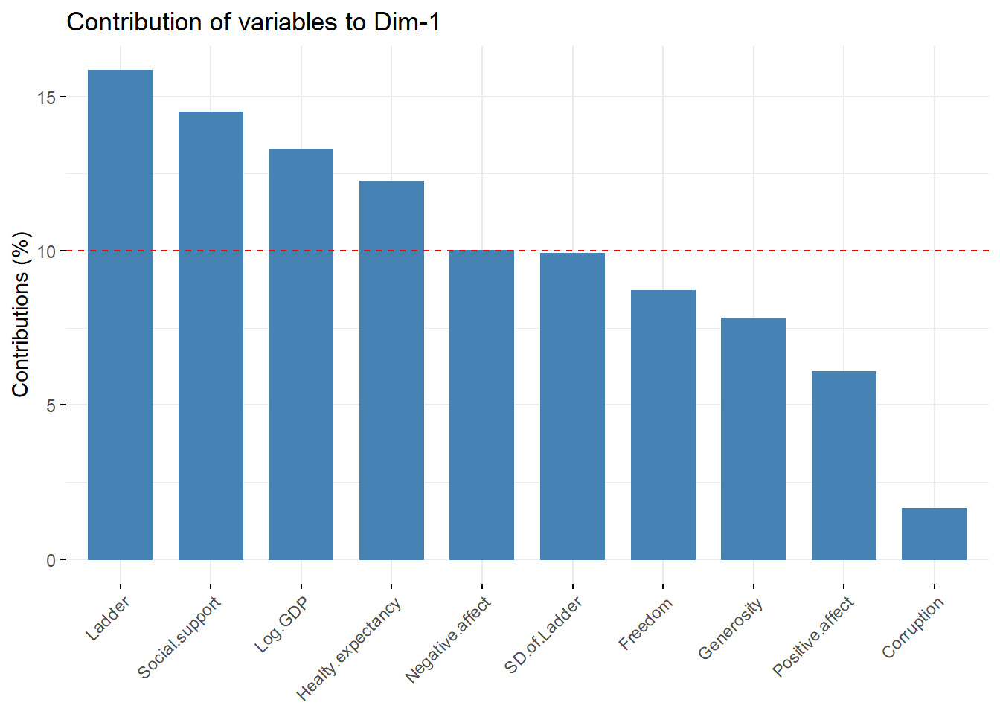

World Happiness Report
Dwi Retno
2022-06-11
Data yang digunakan berasal dari Kaggle.Tujuan clustering ini untuk mengelompokkan data negara berdasarkan seberapa bahagia negara tersebut dari tingkat emosi positif/ negatif, korupsi, tingkat kesehatan dll.
Keterangan Data :
Country= Name of the country.Ladder= Cantril Ladder is a measure of life satisfaction.SD of Ladder= Standard deviation of the ladder.Positive affect= Measure of positive emotion.Negative affect= Measure of negative emotion.Social support= The extent to which Social support contributed to the calculation of the Happiness Score.Freedom= The extent to which Freedom contributed to the calculation of the Happiness Score.Corruption= The extent to which Perception of Corruption contributes to Happiness Score.Generosity= The extent to which Generosity contributed to the calculation of the Happiness Score.Log of GDP per capita= The extent to which GDP contributes to the calculation of the Happiness Score.Healthy life expectancy= The extent to which Life expectancy contributed to the calculation of the Happiness Score.
Load Library and Read Data
library(dplyr) # tahap eda##
## Attaching package: 'dplyr'## The following objects are masked from 'package:stats':
##
## filter, lag## The following objects are masked from 'package:base':
##
## intersect, setdiff, setequal, unionlibrary(GGally) # visualisasi korelasi## Loading required package: ggplot2## Registered S3 method overwritten by 'GGally':
## method from
## +.gg ggplot2library(factoextra) # visualisasi elbow method## Welcome! Want to learn more? See two factoextra-related books at https://goo.gl/ve3WBalibrary(FactoMineR) # PCA
library(tidyverse) # data cleansing## -- Attaching packages --------------------------------------- tidyverse 1.3.1 --## v tibble 3.1.7 v purrr 0.3.4
## v tidyr 1.2.0 v stringr 1.4.0
## v readr 2.1.2 v forcats 0.5.1## -- Conflicts ------------------------------------------ tidyverse_conflicts() --
## x dplyr::filter() masks stats::filter()
## x dplyr::lag() masks stats::lag()library(ggiraphExtra) # buat lebih mudah profilingData csv disimpan dalam objek happiness.Dan berikut ini
5 data teratas pada data happiness dibawah.
happiness <- read.csv("world-happiness-report-2019.csv")
head(happiness)Berikut ini adalah tipe data dari data
happiness.Sepertinya semua tipe data sudah sesuai, maka
akan kita lanjutkan dengan cek missing value.
glimpse(happiness)## Rows: 156
## Columns: 11
## $ Country..region. <chr> "Finland", "Denmark", "Norway", "Iceland", "Ne~
## $ Ladder <int> 1, 2, 3, 4, 5, 6, 7, 8, 9, 10, 11, 12, 13, 14,~
## $ SD.of.Ladder <int> 4, 13, 8, 9, 1, 11, 18, 15, 23, 10, 26, 62, 14~
## $ Positive.affect <int> 41, 24, 16, 3, 12, 44, 34, 22, 18, 64, 47, 4, ~
## $ Negative.affect <int> 10, 26, 29, 3, 25, 21, 8, 12, 49, 24, 37, 87, ~
## $ Social.support <int> 2, 4, 3, 1, 15, 13, 25, 5, 20, 31, 7, 42, 38, ~
## $ Freedom <int> 5, 6, 3, 7, 19, 11, 10, 8, 9, 26, 17, 16, 93, ~
## $ Corruption <int> 4, 3, 8, 45, 12, 7, 6, 5, 11, 19, 13, 58, 74, ~
## $ Generosity <int> 47, 22, 11, 3, 7, 16, 17, 8, 14, 25, 6, 75, 24~
## $ Log.of.GDP.per.capita <int> 22, 14, 7, 15, 12, 8, 13, 26, 19, 16, 18, 67, ~
## $ Healthy.life.expectancy <int> 27, 23, 12, 13, 18, 4, 17, 14, 8, 15, 10, 28, ~Terdapat cukup banyak data yang hilang/ missing ada data
Positive.affect, Negative.affect
Social.support, Freedom,
Corruption, Generosity,
Log.of.GDP.per.capita,
Healthy.life.expectancy.
colSums(is.na(happiness))## Country..region. Ladder SD.of.Ladder
## 0 0 0
## Positive.affect Negative.affect Social.support
## 1 1 1
## Freedom Corruption Generosity
## 1 8 1
## Log.of.GDP.per.capita Healthy.life.expectancy
## 4 6Untuk handling missing value ini, saya akan melakukan
imputasi dengan mengisi nilai yg kosong dengan nilai rata-rata dari data
untuk setiap kolom.Dan saya juga akan mengubah nama kolom
Log.of.GDP.per.capita menjadi Log.GDP dan
kolom Healthy.life.expectancy menjadi
Healty.expectancy.
happiness_clean <- happiness %>%
rename(Log.GDP = Log.of.GDP.per.capita,
Healty.expectancy = Healthy.life.expectancy) %>%
mutate(Positive.affect = replace_na(Positive.affect, mean(Positive.affect, na.rm = TRUE)),
Negative.affect = replace_na(Negative.affect, mean(Negative.affect, na.rm = TRUE)),
Social.support = replace_na(Social.support, mean(Social.support, na.rm = TRUE)),
Freedom = replace_na(Freedom, mean(Freedom, na.rm = TRUE)),
Corruption = replace_na(Corruption,round(mean(Corruption, na.rm = TRUE))),
Generosity = replace_na(Generosity,mean(Generosity, na.rm = TRUE)),
Log.GDP = replace_na(Log.GDP,round(mean(Log.GDP, na.rm = TRUE))),
Healty.expectancy = replace_na(Healty.expectancy,round(mean(Healty.expectancy, na.rm = TRUE))))
colSums(is.na(happiness_clean))## Country..region. Ladder SD.of.Ladder Positive.affect
## 0 0 0 0
## Negative.affect Social.support Freedom Corruption
## 0 0 0 0
## Generosity Log.GDP Healty.expectancy
## 0 0 0Nah, sepertinya sudah terisi semua kolom yang kosong.Setelah itu,
kita jadikan kolom Country..region. menjadi rowname.
happiness_clean <- happiness_clean %>% column_to_rownames("Country..region.")Berikut ini adalah ringkasan data happiness_clean.
summary(happiness_clean)## Ladder SD.of.Ladder Positive.affect Negative.affect
## Min. : 1.00 Min. : 1.00 Min. : 1.00 Min. : 1.00
## 1st Qu.: 39.75 1st Qu.: 39.75 1st Qu.: 39.75 1st Qu.: 39.75
## Median : 78.50 Median : 78.50 Median : 78.00 Median : 78.00
## Mean : 78.50 Mean : 78.50 Mean : 78.00 Mean : 78.00
## 3rd Qu.:117.25 3rd Qu.:117.25 3rd Qu.:116.25 3rd Qu.:116.25
## Max. :156.00 Max. :156.00 Max. :155.00 Max. :155.00
## Social.support Freedom Corruption Generosity
## Min. : 1.00 Min. : 1.00 Min. : 1.00 Min. : 1.00
## 1st Qu.: 39.75 1st Qu.: 39.75 1st Qu.: 39.75 1st Qu.: 39.75
## Median : 78.00 Median : 78.00 Median : 74.00 Median : 78.00
## Mean : 78.00 Mean : 78.00 Mean : 74.47 Mean : 78.00
## 3rd Qu.:116.25 3rd Qu.:116.25 3rd Qu.:109.25 3rd Qu.:116.25
## Max. :155.00 Max. :155.00 Max. :148.00 Max. :155.00
## Log.GDP Healty.expectancy
## Min. : 1.00 Min. : 1.00
## 1st Qu.: 39.75 1st Qu.: 39.75
## Median : 76.00 Median : 76.00
## Mean : 76.49 Mean : 75.52
## 3rd Qu.:113.25 3rd Qu.:111.25
## Max. :152.00 Max. :150.00Kita akan analisis PCA dengan menggunakan fungsi PCA()
dari library factoMineR.Sebelumnya, data yang akan
dianalisis akan menggunakan data numerik saja.Setelah data numerik yang
dipilih maka akan disimpan dalam objek happiness_num.
Analisis PCA,X diisi dengan objek yang
berisi data happiness_clean yang numerik,
scale.unit diisi FALSE karena data sudah
terskala dengan benar.
# Hanya mengambil data numerik saja
happiness_num <- happiness_clean %>% select_if(is.numeric)
happy_pca <- PCA(X = happiness_num,
scale.unit = F,
graph = F)
summary(happy_pca)##
## Call:
## PCA(X = happiness_num, scale.unit = F, graph = F)
##
##
## Eigenvalues
## Dim.1 Dim.2 Dim.3 Dim.4 Dim.5
## Variance 10306.900 2676.605 1753.369 1383.845 1162.535
## % of var. 53.095 13.788 9.032 7.129 5.989
## Cumulative % of var. 53.095 66.884 75.916 83.045 89.034
## Dim.6 Dim.7 Dim.8 Dim.9 Dim.10
## Variance 576.019 531.792 455.657 287.979 277.330
## % of var. 2.967 2.739 2.347 1.484 1.429
## Cumulative % of var. 92.001 94.741 97.088 98.571 100.000
##
## Individuals (the 10 first)
## Dist Dim.1 ctr cos2 Dim.2 ctr
## Finland | 199.763 | -189.905 2.243 0.904 | -14.135 0.048
## Denmark | 203.298 | -196.181 2.394 0.931 | -30.430 0.222
## Norway | 214.328 | -208.483 2.703 0.946 | -31.314 0.235
## Iceland | 216.295 | -213.013 2.822 0.970 | -26.841 0.173
## Netherlands | 205.997 | -199.537 2.476 0.938 | -26.592 0.169
## Switzerland | 202.815 | -196.973 2.413 0.943 | -11.515 0.032
## Sweden | 197.247 | -190.151 2.249 0.929 | -25.589 0.157
## New Zealand | 206.842 | -199.547 2.476 0.931 | -33.558 0.270
## Canada | 190.958 | -182.118 2.063 0.910 | -37.662 0.340
## Austria | 174.978 | -167.725 1.750 0.919 | 5.605 0.008
## cos2 Dim.3 ctr cos2
## Finland 0.005 | -41.411 0.627 0.043 |
## Denmark 0.022 | -36.989 0.500 0.033 |
## Norway 0.021 | -32.862 0.395 0.024 |
## Iceland 0.015 | -3.793 0.005 0.000 |
## Netherlands 0.017 | -36.383 0.484 0.031 |
## Switzerland 0.003 | -42.835 0.671 0.045 |
## Sweden 0.017 | -42.208 0.651 0.046 |
## New Zealand 0.026 | -38.528 0.543 0.035 |
## Canada 0.039 | -27.597 0.278 0.021 |
## Austria 0.001 | -45.130 0.745 0.067 |
##
## Variables
## Dim.1 ctr cos2 Dim.2 ctr cos2 Dim.3
## Ladder | 40.412 15.845 0.805 | -2.757 0.284 0.004 | -8.591
## SD.of.Ladder | 31.957 9.908 0.504 | -18.792 13.193 0.174 | 16.963
## Positive.affect | 25.019 6.073 0.315 | 29.328 32.136 0.432 | -14.423
## Negative.affect | 32.103 9.999 0.518 | -3.794 0.538 0.007 | 2.459
## Social.support | 38.637 14.484 0.750 | -9.080 3.080 0.041 | -7.334
## Freedom | 29.953 8.705 0.451 | 27.029 27.294 0.367 | -0.996
## Corruption | 12.988 1.637 0.097 | 16.088 9.670 0.149 | 31.567
## Generosity | 28.386 7.818 0.405 | 9.839 3.617 0.049 | 9.330
## Log.GDP | 37.006 13.287 0.730 | -11.982 5.364 0.077 | -1.592
## Healty.expectancy | 35.526 12.245 0.700 | -11.361 4.823 0.072 | -6.073
## ctr cos2
## Ladder 4.209 0.036 |
## SD.of.Ladder 16.411 0.142 |
## Positive.affect 11.864 0.105 |
## Negative.affect 0.345 0.003 |
## Social.support 3.067 0.027 |
## Freedom 0.057 0.000 |
## Corruption 56.834 0.575 |
## Generosity 4.965 0.044 |
## Log.GDP 0.145 0.001 |
## Healty.expectancy 2.103 0.020 |Berikut ini visualisasi PCA.
plot.PCA(x = happy_pca,
choix = "var")
insight :
- PC1 merangkum paling banyak di Ladder, health.expectancy dan log GDP
- PC2 merangkum paling banyak di corruption, positive effect, Freedom
- Pasangan variabel yang saling berkolerasi tinggi positif :
- corruption dan positive.effect
- health.expectancy dan log GDP
fviz_contrib(X = happy_pca,
choice = "var",
axes = 1)
Untuk memilih nilai K yang optimum secara objektif dapat
menggunakan Elbow method.Dengan menggunakan fungsi
fviz_nbclust() dari library factoextra.Dipilih
nilai k sebesar 5 karena tidak terlalu melambai jika dibandingkan dengan
nilai k yang lain.
# Using Elbow Method
fviz_nbclust(happiness_num, kmeans, method = "wss" )+
labs(subtitle = "Elbow Method")+
theme_classic()
Melakukan K-means dengan banyaknya centroid berjumlah 5.
RNGkind(sample.kind = "Rounding")## Warning in RNGkind(sample.kind = "Rounding"): non-uniform 'Rounding' sampler
## usedset.seed(100)
# kmeans cluster
happy_cluster <-kmeans(x = happiness_num,
centers = 5)
happy_cluster$cluster## Finland Denmark Norway
## 4 4 4
## Iceland Netherlands Switzerland
## 4 4 4
## Sweden New Zealand Canada
## 4 4 4
## Austria Australia Costa Rica
## 4 4 1
## Israel Luxembourg United Kingdom
## 2 4 4
## Ireland Germany Belgium
## 4 4 4
## United States Czech Republic United Arab Emirates
## 4 2 4
## Malta Mexico France
## 4 1 4
## Taiwan Chile Guatemala
## 3 1 1
## Saudi Arabia Qatar Spain
## 1 1 2
## Panama Brazil Uruguay
## 1 1 1
## Singapore El Salvador Italy
## 4 1 2
## Bahrain Slovakia Trinidad and Tobago
## 1 2 3
## Poland Uzbekistan Lithuania
## 2 3 2
## Colombia Slovenia Nicaragua
## 1 2 1
## Kosovo Argentina Romania
## 3 1 1
## Cyprus Ecuador Kuwait
## 1 1 1
## Thailand Latvia South Korea
## 3 2 2
## Estonia Jamaica Mauritius
## 4 1 3
## Japan Honduras Kazakhstan
## 4 3 2
## Bolivia Hungary Paraguay
## 1 2 3
## Northern Cyprus Peru Portugal
## 2 1 1
## Pakistan Russia Philippines
## 5 2 1
## Serbia Moldova Libya
## 2 2 1
## Montenegro Tajikistan Croatia
## 2 5 2
## Hong Kong Dominican Republic Bosnia and Herzegovina
## 4 1 2
## Turkey Malaysia Belarus
## 2 3 2
## Greece Mongolia Macedonia
## 2 2 2
## Nigeria Kyrgyzstan Turkmenistan
## 3 3 2
## Algeria Morocco Azerbaijan
## 5 5 2
## Lebanon Indonesia China
## 2 3 1
## Vietnam Bhutan Cameroon
## 2 3 5
## Bulgaria Ghana Ivory Coast
## 2 5 5
## Nepal Jordan Benin
## 5 5 5
## Congo (Brazzaville) Gabon Laos
## 5 5 3
## South Africa Albania Venezuela
## 3 5 5
## Cambodia Palestinian Territories Senegal
## 3 5 5
## Somalia Namibia Niger
## 3 5 5
## Burkina Faso Armenia Iran
## 5 5 5
## Guinea Georgia Gambia
## 5 5 5
## Kenya Mauritania Mozambique
## 3 5 5
## Tunisia Bangladesh Iraq
## 5 5 5
## Congo (Kinshasa) Mali Sierra Leone
## 5 5 5
## Sri Lanka Myanmar Chad
## 3 3 5
## Ukraine Ethiopia Swaziland
## 2 5 5
## Uganda Egypt Zambia
## 5 5 5
## Togo India Liberia
## 5 5 5
## Comoros Madagascar Lesotho
## 5 5 5
## Burundi Zimbabwe Haiti
## 5 5 5
## Botswana Syria Malawi
## 5 5 5
## Yemen Rwanda Tanzania
## 5 5 5
## Afghanistan Central African Republic South Sudan
## 5 5 5happiness_clean["Indonesia",]Hasil dari happy_cluster diatas kita masukkan kedalam
objek dari dataframe happiness_clean pada kolom
kelompok.
happiness_clean$kelompok <- happy_cluster$clusterDibawah ini adalah tabel happiness_clean yang diurutkan
berdasarkan kelompok dengan ringkasan mean dari semua kolom.
happiness_clean %>%
group_by(kelompok) %>%
summarise_all(mean)Profiling :
Cluster 1 : Tingkat tidak ada yang mendominasi atau standar.
Cluster 2 : Tingkat efek positif, korupsi tinggi
Cluster 3 : Tingkat efek positif rendah
Cluster 4 : Tingkat kebebasan, efek negatif, korupsi, bantuan sosial, harapan kesehatan, deramawan rendah
Cluster 5 : Tingkat efek negatif, bantuan sosial, kebebasan tinggi
library(ggiraphExtra)
ggRadar(data=happiness_clean, aes(colour=kelompok), interactive=TRUE)Cek negara mana yang masuk ke kelompok 2.
happiness_clean %>% filter(kelompok == 2)happiness_clean %>%
tidyr::pivot_longer(-kelompok) %>%
group_by(name) %>%
summarize(cluster_min_val = which.min(value),
cluster_max_val = which.max(value))